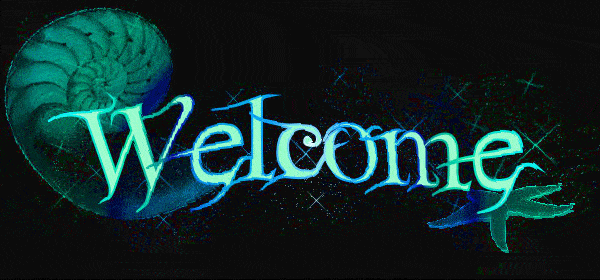
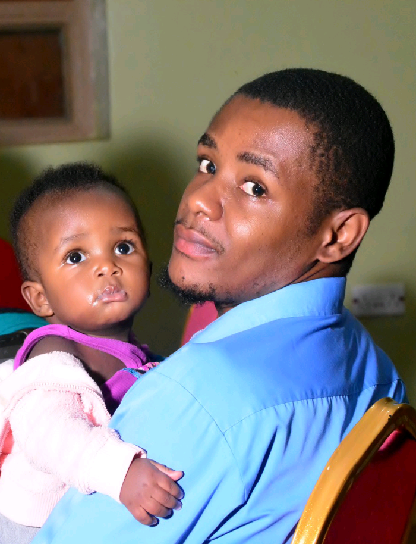

The Story told with passion

Name: Kwikiriza Mathias
Email: kwikirizamathias616@gmail.com
Twitter: @KwikirizaMath6
Mobile: +256 781582777/+256 701366499
Introduction
In the journey of education, every person has their own impression
It's until we attain maturity that sometimes we come to realize what goals we need to organize and work to achieve
Though many grow up with childhood dreams, the story becomes different as we change environments, interact with different people, etc.
Personally, i didn't know what i wanted till i reached highschool. Boom!, i wanted to study sciences but with no clear focus
When it reached time to attend university, i applied for a government scholarship and was given a bachelor's of science in mining engineering
I did the course but later realized that it would have been better if i have pursued a profession in software development
This however didn't demoralize me as i can now pursue my dream profession and still connect with the current profession
My career as a mining engineer
Honestly i would say a lot about this career but for the moment i can say i developed love and excelled in it and my passion now is to
utilize modern software development skills to at least contribute something to the mining industry and if possible do other businesses.
There is more to mining than i can say but what i can do for now is to link you to the Busitema University website where such program and other courses are offered.
click to see more
Having said that, let's dive into my software engineering profession
Software engineering
Below are the details of my software engineering learning journey
Alx Software engineering program
I attended this program starting June 2022 and am still undertaking it till July 2023.
The beauty of this program is that it is self-driven and 100% practical Read more.
The programs taught include programing in C, python, and also at the end, students are made to choose whether to conclude with frontend development or backend
html, CSS, and JavaScript
Because of the passion i had, i took online courses offered through coursera, Udacity, and through YouTube tutorials to learn these concepts. Even this website, i built it when i was beginging to code in the above languages.
Right now i can a lot of front-end webdevelopment using the above languages and professionally implement the MVC format for webdevelopment
Android development Using Kotlin programming language
Just as with html, CSS, and JavaScript, i learnt Kotlin from online platforms and this in particular from
Google developer websites i.e., android Kotlin development beginner course. From this start Knowledge, i went on to do more practice and research to reach where i am today